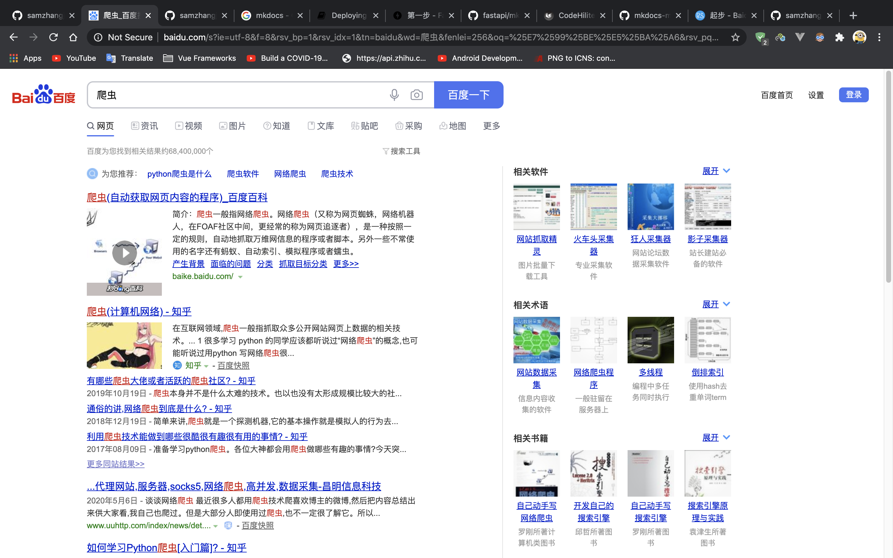

起步
简介
BaiduSpider是一个用Python的requests库编写的网络爬虫，可以爬取百度搜索，百度图片，百度知道，百度视频，百度资讯，百度文库，百度经验和百度百科，并且返回的搜索结果无广告。
安装
BaiduSpider目前还没有发布PyPi包，暂时仅提供GitHub下载。你可以访问GitHub仓库来下载zip压缩包，或者直接clone：
$ git clone https://github.com/samzhangjy/BaiduSpider.git
---> 100%
简单使用
安装好了之后，打开BaiduSpider所在的文件夹，创建一个Python文件，输入下面的代码：
from main import BaiduSpider # 导入BaiduSpider
from pprint import pprint # 导入pretty-print
# 获取百度的搜索结果，搜索关键词是'爬虫'
pprint(BaiduSpider().search_web('爬虫'))
运行完之后，你会得到类似下面的搜索结果：
{'results': [{'result': 68400000, 'type': 'total'},
{'results': ['python为什么叫爬虫',
'爬虫python',
'学python要多久',
'python值得学吗',
'python基础教程',
'普通人学python有意义吗',
'python编程入门',
'python爬虫是干嘛的',
'python爬虫怎么挣钱'],
'type': 'related'},
{'des': None,
'origin': 'baike.baidu.com/',
'title': '爬虫(自动获取网页内容的程序)_百度百科',
'type': 'result',
'url': 'http://www.baidu.com/link?url=005sdTKm5kDkkDo4sZ9QATTGHbeTAZeqnu1CmqK289cg99VBjmzvCjS1LzDLbMVk_N7BPkGERAn8uygNwSvbUMiU3pspebefDsHhj8svGnne1E9T0QJKH-UHzazESaoMUiCvQTN4lhm4iGskJwQLX5gGcNcGEn1N0yoYSdQ2LuIFMKFsMxpEihrKpLyxpVQc'},
{'des': '在互联网领域,爬虫一般指抓取众多公开网站网页上数据的相关技术。... 1 很多学习 python '
'的同学应该都听说过“网络爬虫”的概念,也可能听说过用python 写网络爬虫很...',
'origin': '知乎',
'title': '爬虫(计算机网络) - 知乎',
'type': 'result',
'url': 'http://www.baidu.com/link?url=37zUAtoTZXibCGV_ghTS7xg78XQqYx8IJVBvG-Lg5ATyn7rXvuKICu68R8f8RDOw'},
{'des': '2020年5月6日-谈谈网络爬虫最近很多人都用爬虫技术爬喜欢博主的微博,然后把内容总结出来供大家看,我自己也爬过。但是大部分人即使用过爬虫,也不一定很了解它。所以...',
'origin': 'www.uuhttp.com/index/news/det....',
'title': '...代理网站,服务器,socks5,网络爬虫,高并发,数据采集-昌明信息科技',
'type': 'result',
'url': 'http://www.baidu.com/link?url=5QWDBrCbuY6bBoyD1ArZC7LxzrMqL1cQFmcbsHMmMUUlmHopm_OdCk68_EgZLu6RPVJde1KRwl-Lvc3yPw-ICK'},
{'des': '2019年4月13日-这篇文章已经过去很久了,有一些学习资源链接已经失效了,还一直有小伙伴在Python的路上摸索。所以我根据自己的学习和工作经历整理了一套Python学习电子...',
'origin': '知乎',
'title': '如何学习Python爬虫[入门篇]? - 知乎',
'type': 'result',
'url': 'http://www.baidu.com/link?url=IsaPRe7f2CPvy72AVRxg8XTq6M0whS_yP5V_aQDn2gfVMeOw8t3BN3q0NvB4ZAqh'},
{'des': '我们的目标是,爬爬爬爬完知乎爬简书爬完豆瓣爬京东爬完网站,爬移动端 爬完数据,搞分析 收录分享优质爬虫学习文章 '
'加微信 yong164647 (暗号 py) 进入爬...',
'origin': '简书社区',
'title': '爬虫专题 - 专题 - 简书',
'type': 'result',
'url': 'http://www.baidu.com/link?url=TpFN1fX5q-hGCbJl6Xp6bWSXSxADuH3To1P0XGpic1bM66UdkfAsYZMoii32D0nZ'},
{'des': '2018年10月16日-问题的由来\u2003\u2003'
'前几天,在微信公众号(Python爬虫及算法)上有个人问了笔者一个问题,如何利用爬虫来实现如下的需求,需要爬取的网页如下(网址为:https://www...',
'origin': 'CSDN技术社区',
'title': 'Python爬虫的N种姿势_山阴少年-CSDN博客_python爬虫',
'type': 'result',
'url': 'http://www.baidu.com/link?url=rOzUP_gsxOoHlPqztsjnE0XR5a1ldFEX8Hc3_VLhYrRPgp2BPxhDjGfAH1itXsmyDX5kKNyAYnZoWRTc4B8WlkcTkKZe55g9lBLFNsxmB8e'},
{'des': '2019年10月18日-张强,在一家大数据风控公司担任爬虫工程师,每当看到网上的段子,爬虫学得好,监狱进得早,他总是莞尔一笑,心想:关我毛事啊,我只是个程序员,要坐牢也是老...',
'origin': 'CSDN技术社区',
'title': '“来我公司写爬虫吗?会坐牢的那种!”_技术领导力-CSDN博客_爬虫',
'type': 'result',
'url': 'http://www.baidu.com/link?url=ppM2uEB9v01U_C4N6f238Aken-56LUY7B1HZPfdgw14LM736FYO-kVt6ZzpW_XAvCBTqiRjh6KHIR9_yRi_LT88nS5GDFYWm77Y3aDKh8bm'},
{'des': '2020年3月25日-网络爬虫是一种按照一定的规则,自动地抓取万维网信息的程序或者脚本,网络爬虫是一个自动提取网页的程序,它为搜索引擎从万维网上下载网页,是搜索引擎的...',
'origin': 'www.pc6.com/pc/pacho...',
'title': '【爬虫软件】爬虫软件哪个好用_爬虫工具哪个好',
'type': 'result',
'url': 'http://www.baidu.com/link?url=qtISm1DQ2qBipKqTuUKAH0MUDS76n7pO_rwwqAB3SNzIF90ge2U4r6K79re1z3jO'},
{'des': 'GooSeeker网络爬虫软件-免费网页抓取软件,抓取网页上的数据,存成excel表格,用于行业研究,市场分析,电商竞争分析,抓取商品价格和图片,自动分词软件用于毕业设计和文本挖掘',
'origin': 'www.gooseeker.com/',
'title': '免费网页抓取软件-网络爬虫工具-集搜客GooSeeker网络爬虫',
'type': 'result',
'url': 'http://www.baidu.com/link?url=goBy2sYHlafzUVff7iVvATZmFztaI6JUBQKnzpqO__HMEALpWhh1VtZKujrzhuO6'},
{'des': 'GooSeeker网络爬虫软件-免费网页抓取软件,抓取网页上的数据,存成excel表格,用于行业研究,市场分析,电商竞争分析,抓取商品价格和图片,自动分词软件用于毕业设计和文本挖掘',
'origin': None,
'title': '爬虫_百度汉语',
'type': 'result',
'url': 'http://www.baidu.com/link?url=fnGr2l7GvSLWLO1lrJqG_NHIxflu_e2A9TozMeVulZU06SVyrXk_1xQtD2cbuusu9IXMwg_9gHjoehNLLjPjZMc3ienyBCXmnOKqzRTQbP1bGE0BC4y--7MCom_4aL2TGldkps6P4x7me2tN3oOC7_'}],
'total': 10}
对比一下百度的搜索结果，发现准确度还是不错的：

Note
百度的搜索结果可能会随着时间而变化，所以搜索结果与上面的搜索结果不一致也不要紧。
除此之外，BaiduSpider还提供百度图片，百度知道，百度视频，百度资讯，百度文库，百度经验和百度百科的搜索结果，并且会持续添加新的爬虫搜索。在下一篇里，你将学会如何使用BaiduSpider（其实非常简单）。